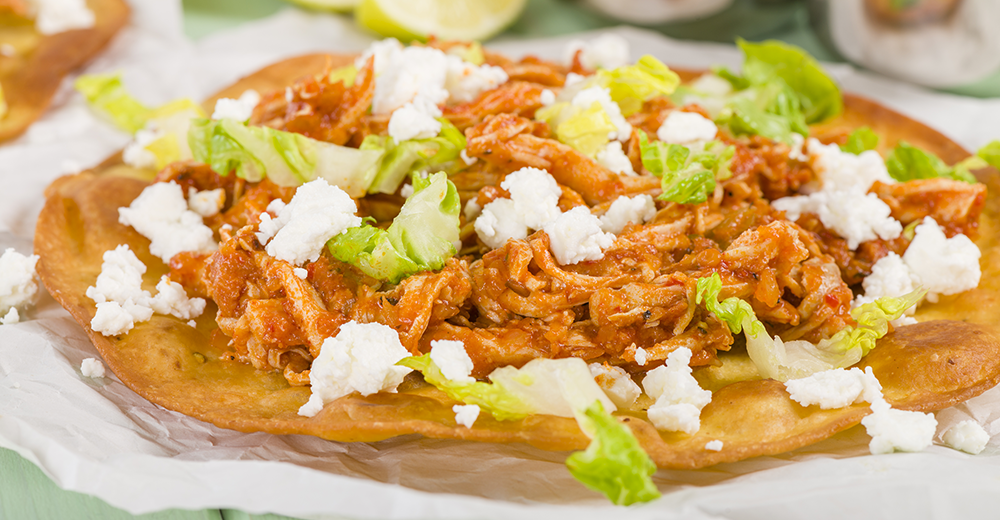

Tinga

Description
Tinga is a Mexican dish that is made with shredded chicken in a tomatoe sauce with chipotle chiles in a adobo. It's often served
on a tostada and other side dishes such as rice or beans. The dish can be mild or spicy depending on how much chipotle peppers
are used while making the dish. It's a great dish to cook for parties or just for the family for how great the flavors are as well how
much it fills one's stomach. The nice thing is that with the help of the tostada tinga is a food that is not messy to eat and is easy
to go from the plate to your mouth.
Ingredients
- Chicken
- Onions
- Tomatoes
- Chipotle Chiles
- Vegetable Oil or lard
- Salt
- Pepper
- Oregano
- Thyme
- Garlic cloves
- Marjoram
Steps
- Bring a pot of water and salt to a boil and add the chicken breast to cook.
- Add onions cut in quarters, garlic cloves, bay leaves, Mexican dried oregano. To the pot of water cooking the chicken.
- Allow the chicken meat to simmer on medium heat until it cooks through.
- Make sure you skim the foam that forms on top of the water as it starts simmering.
- Time to prep the sauce; place the tomatoes in a medium saucepan, cover with water, bring to a simmer over medium-high heat,
and cook for 8 to 10 minutes, or until the tomatoes are soft and mushy but not falling apart.
- In a blender or a food processor, place the tomato mixture, garlic, salt, pepper, and 2-3 chiles of chipotle from the can.
- After blending the ingredients, taste the salsa for salt and pepper and adjust the seasoning.
- Slice the onions and put them in a large skillet with oil that has been heated up already
- Cook the onions until soft and translucent for about 5-6 minutes.
- Pour the salsa over the cooked onions. Add oregano, marjoram, and thyme.
- Let it simmer on low heat, and be careful as the sauce will steam and bubble. Stir occasionally, partially covered, until the
sauce becomes darker and thicker.
- Remove the chicken from the pot and shred it.
- Add the chicken to the tinga sauce and mix.
- Taste again for salt and pepper. Let it simmer for only a minute so the ingredients get acquainted with each other.
- Put a tostada on a plate and add the chicken onto the tostada
- Now its time to eat.